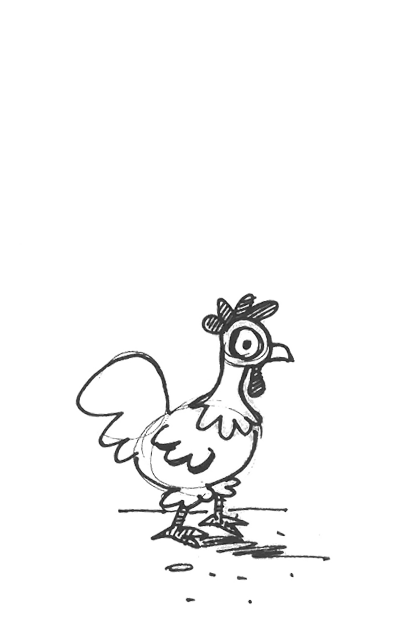

zij
zij
(persoonlijk voornaamwoord)
derde persoon vrouwelijk enkelvoud

zij
zij
(persoonlijk voornaamwoord)
derde persoon meervoud voor alle geslachten

hen
hen
(zelfstandig naamwoord)
vrouwlijke kip

Hun
hen
(zelfstandig naamwoord)
(zelfstandig naamwoord) lid van het volk de Hunnen